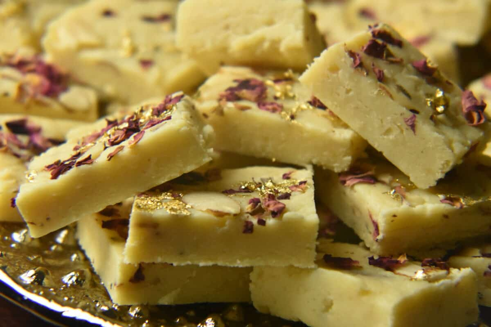

Gulab Jamun
Gulab jamun are a popular classic Indian sweet made of milk solids and sugar.
Ingredients
- sugar
- bread
- oil
Recipe
- Mix 1 cup of milk powder, 1/2 cup of all-purpose flour, and 1/2 tsp of baking soda.
- Add 2 tbsp of ghee and mix well.
- Gradually add milk and form a soft dough.
- Make small balls from the dough and deep fry them until golden brown.
- Soak the fried balls in sugar syrup flavored with cardamom for an hour.

Kaju Barfi
Kaju Barfi (also known as Kaju Katli) is a popular Indian sweet made primarily from cashew nuts and sugar.
Ingredients
- sugar
- bread
- oil
Recipe
- Grind 1 1/2 cups of cashew nuts to a fine powder.
- In a pan, add 3/4 cup of sugar and 6 tablespoons of water. Cook on medium heat until the sugar dissolves completely..
- Flatten the mixture with a spatula and let it cool down.
- Add the cashew powder and mix well.
- Cut the mixture into diamond shapes and serve.
